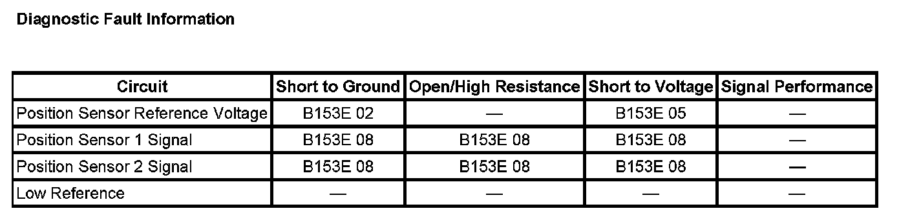

B153E
DTC B153E
DIAGNOSTIC INSTRUCTIONS
- Perform the Diagnostic System Check - Vehicle prior to using this diagnostic procedure. Initial Inspection and Diagnostic Overview
- Review Strategy Based Diagnosis for an overview of the diagnostic approach
- Diagnostic Procedure Instructions provides an overview of each diagnostic category
DTC DESCRIPTOR
DTC B153E 02
Liftgate Position Sensor Reference Voltage Circuit Short to Ground
DTC B153E 05
Liftgate Position Sensor Reference Voltage Circuit Short to Battery
DTC B153E 08
Liftgate Position Sensor Signal Circuit Signal Invalid

DIAGNOSTIC FAULT INFORMATION
CIRCUIT/SYSTEM DESCRIPTION
The liftgate control module continuously monitors power liftgate operation and calculates its location and direction of travel using 2 hall effect sensors that are part of the gear motor assembly. The hall effect sensors are 5-volt 3-wire sensors and are supplied with a 5-volt power circuit, ground and 5-volt signal circuits from the liftgate control module. The hall effect sensor signal circuits are referenced from 5 volts within the liftgate control module and pulsed low by the hall effect sensors.
CONDITIONS FOR RUNNING THE DTC
System voltage to the liftgate control module must be 9-16 volts.
CONDITIONS FOR SETTING THE DTC
- The hall sensor supply circuit is shorted low during a power open or close cycle.
- The hall sensor supply circuit is shorted high while in an off state.
- During a power open or close cycle, pulses are detected from only one hall sensor.
ACTION TAKEN WHEN THE DTC SETS
- An open condition on the hall sensor signal circuit may cause the liftgate control module to react as if the liftgate has encountered an object in its travel and reverse direction.
- A shorted low condition will cause all power functions to be inoperative.
CONDITIONS FOR CLEARING THE DTC
- The DTC will be current for as long as the fault is present.
- When the fault is no longer present the DTC will be a history status code.
CIRCUIT/SYSTEM TESTING
1. Disconnect the liftgate control module connector C3.
2. Ignition ON, verify that 4.0-5.5 volts are present between the 5-volt reference and low reference circuit terminals in the liftgate control module.
- If 4.0-5.5 volts are not present, replace the liftgate control module.
3. Verify that 4.0-5.5 volts are present between the sensor 1 signal and low reference circuit terminals in the liftgate control module.
- If 4.0-5.5 volts are not present, replace the liftgate control module.
4. Verify that 4.0-5.5 volts are present between the sensor 2 signal and low reference circuit terminals in the liftgate control module.
- If 4.0-5.5 volts are not present, replace the liftgate control module.
5. If all the circuits test normal, replace the liftgate motor assembly.
REPAIR INSTRUCTIONS
Perform the Diagnostic Repair Verification after completing the diagnostic procedure.
- Power Liftgate Motor Replacement
- Control Module References for liftgate control module replacement, programming and setup. Verification Tests Programming and Relearning